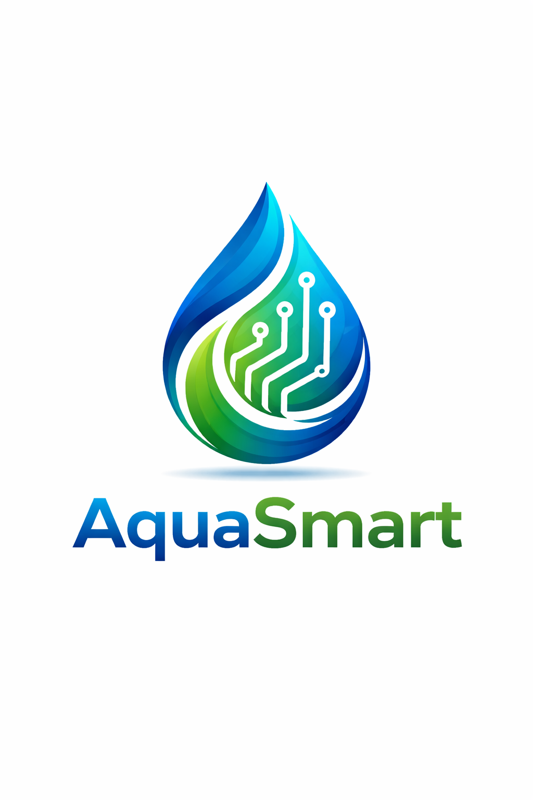

Bienvenido a AquaSmart
Problemática
En el municipio de Cota se presentan problemáticas relacionadas con el desperdicio de agua, la falta de comunicación eficiente y la baja calidad del recurso hídrico. Esta situación afecta hogares, instituciones y empresas, generando ineficiencia y riesgos para la comunidad.

Solución
AquaSmart propone una solución basada en sensores inteligentes, una aplicación móvil y un panel web. Estas herramientas permiten monitorear el consumo de agua en tiempo real, detectar fugas y mejorar la comunicación entre usuarios y entidades responsables.

Objetivos
- Reducir el desperdicio de agua.
- Detectar incidencias en tiempo real.
- Optimizar la gestión del recurso hídrico.

Misión
Brindar soluciones tecnológicas que permitan gestionar eficientemente el agua, promoviendo el uso responsable del recurso.

Visión
Ser una plataforma reconocida por mejorar la gestión del agua y contribuir al desarrollo sostenible en comunidades.